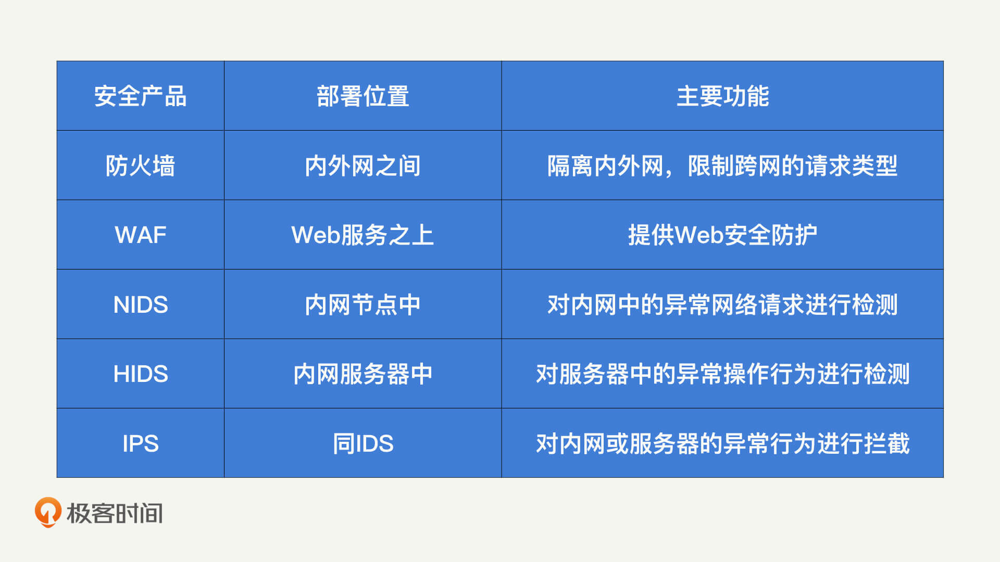
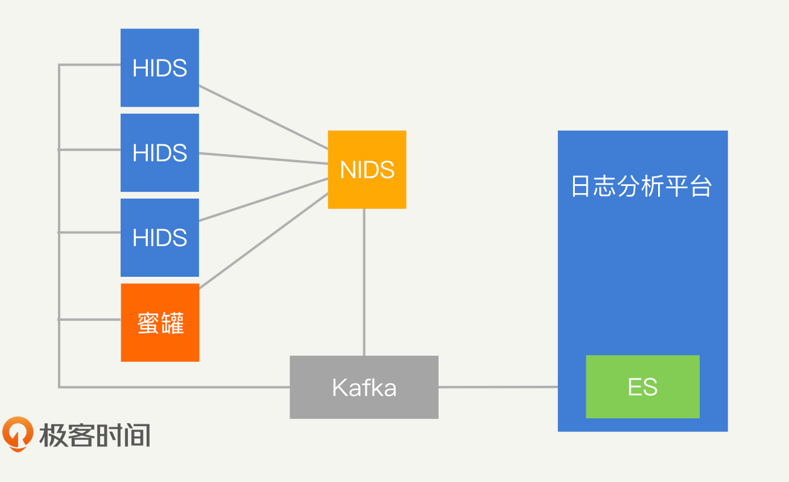

- 00 开篇词 别说你没被安全困扰过.md.html
- 01 安全的本质：数据被窃取后，你能意识到问题来源吗？.md.html
- 02 安全原则：我们应该如何上手解决安全问题？.md.html
- 03 密码学基础：如何让你的密码变得“不可见”？.md.html
- 04 身份认证：除了账号密码，我们还能怎么做身份认证？.md.html
- 05 访问控制：如何选取一个合适的数据保护方案？.md.html
- 06 XSS：当你“被发送”了一条微博时，到底发生了什么？.md.html
- 07 SQL注入：明明设置了强密码，为什么还会被别人登录？.md.html
- 08 CSRF_SSRF：为什么避免了XSS，还是“被发送”了一条微博？.md.html
- 09 反序列化漏洞：使用了编译型语言，为什么还是会被注入？.md.html
- 10 信息泄露：为什么黑客会知道你的代码逻辑？.md.html
- 11 插件漏洞：我的代码看起来很安全，为什么还会出现漏洞？.md.html
- 13 Linux系统安全：多人共用服务器，如何防止别人干“坏事”？.md.html
- 14 网络安全：和别人共用Wi-Fi时，你的信息会被窃取吗？.md.html
- 15 Docker安全：在虚拟的环境中，就不用考虑安全了吗？.md.html
- 16 数据库安全：数据库中的数据是如何被黑客拖取的？.md.html
- 17 分布式安全：上百个分布式节点，不会出现“内奸”吗？.md.html
- 18 安全标准和框架：怎样依“葫芦”画出好“瓢”？.md.html
- 19 防火墙：如何和黑客“划清界限”？.md.html
- 20 WAF：如何为漏洞百出的Web应用保驾护航？.md.html
- 21 IDS：当黑客绕过了防火墙，你该如何发现？.md.html
- 22 RASP：写规则写得烦了？尝试一下更底层的IDS.md.html
- 23 SIEM：一个人管理好几个安全工具，如何高效运营？.md.html
- 24 SDL：怎样才能写出更“安全”的代码？.md.html
- 25 业务安全体系：对比基础安全，业务安全有哪些不同？.md.html
- 26 产品安全方案：如何降低业务对黑灰产的诱惑？.md.html
- 27 风控系统：如何从海量业务数据中，挖掘黑灰产？.md.html
- 28 机器学习：如何教会机器识别黑灰产？.md.html
- 29 设备指纹：面对各种虚拟设备，如何进行对抗？.md.html
- 30 安全运营：“黑灰产”打了又来，如何正确处置？.md.html
- 加餐1 数据安全：如何防止内部员工泄露商业机密？.md.html
- 加餐2 前端安全：如何打造一个可信的前端环境？.md.html
- 加餐3 职业发展：应聘安全工程师，我需要注意什么？.md.html
- 加餐4 个人成长：学习安全，哪些资源我必须要知道？.md.html
- 加餐5 安全新技术：IoT、IPv6、区块链中的安全新问题.md.html
- 模块串讲（一）Web安全：如何评估用户数据和资产数据面临的威胁？.md.html
- 模块串讲（三）安全防御工具：如何选择和规划公司的安全防御体系？.md.html
- 模块串讲（二）Linux系统和应用安全：如何大范围提高平台安全性？.md.html
- 结束语 在与黑客的战役中，我们都是盟友！.md.html
- 捐赠
21 IDS：当黑客绕过了防火墙，你该如何发现？
你好，我是何为舟。
在前面两节课中，我们讲了防火墙和WAF的工作模式，以及它们是如何作为内外网的隔离设备，在网络边界进行安全防护的。
但是，无论是防火墙还是WAF，都无法达到100%的防护效果。黑客总是能有很多其他的办法，来隐藏自己或者直接绕过这些保护机制。因此，我们仍然需要对内网中的行为进行检测，及时发现已经入侵到内网中的黑客。这就需要用到IDS（Intrusion Detection System，入侵检测系统）了。
那么，IDS的工作模式有哪些呢？它能够实现哪些功能呢？今天，我们就一起来学习，如何通过IDS进行安全防护。
什么是IDS？
IDS的最终目的是检测黑客的攻击行为。那我们应该在哪里进行检测呢？首先是在网络流量中：黑客在控制了一台服务器之后，需要进行权限提升，而权限提升需要黑客在内网中挖掘各个服务器存在的漏洞。因此，黑客会发起很多探测和攻击的网络请求。其次就是在服务器系统中，黑客也可以利用服务器系统或应用本身的漏洞进行权限提升，同时，黑客也会尝试在系统中留下后门，这些行为都是通过系统操作来完成的。
因此，根据检测内容的不同，IDS可以分成两种类型：NIDS（Network Intrusion Detection System，网络入侵检测系统）和HIDS（Host-based Intrusion Detection System，基于主机型入侵检测系统）。
第一种类型：NIDS。
在讲防火墙的时候，我们提到防火墙存在盲区：防火墙只能够检测穿越网络边界的流量，如果黑客已经进入到了内网，那防火墙就没办法提供任何的安全防护了。这个时候，我们就需要使用NIDS了。
NIDS主要检测网络流量中的攻击行为。区别于部署在网络边界的防火墙，NIDS一般部署在内网的网络节点（路由器或交换机）中，所有的网络请求都会流经这些网络节点，所以，NIDS基本可以获取到对应网络节点下全部的网络行为。
另外，和防火墙不同的是，NIDS一般不具备拦截网络请求的能力。这也让NIDS能够很好地隐蔽自己，让黑客很难发现。对于防火墙和WAF来说，黑客总是会不断尝试各种方式来绕过这些安全产品，原因就是黑客知道自己被拦截了。因此，这些安全产品需要不断地更新规则策略对抗黑客。如果黑客都不知道NIDS的存在，就不会刻意地去绕过NIDS的检测，这也使得NIDS的检测能力比较稳定，不需要频繁地更新规则策略。
NIDS是一个比较经典的安全产品，你可以直接使用市面上的开源工具，比如：Snort、Suricata等。这些工具也依据CVE库开发了完整的入侵检测规则。以Snort的一条检测规则为例：
Rule Header Message alert tcp $EXTERNAL_NET $HTTP_PORTS -> $HOME_NET any
Message msg: “BROWSER-IE Microsoft Internet Explorer CacheSize exploit attempt”;
Flow flow: to_client,established;
Detection file_data;
content:"recordset"; offset:14; depth:9;
content:".CacheSize"; distance:0; width:100;
pcre:"/CacheSize\s*=\s*/";
byte_test:10,>,0x3ffffffe,0,relative,string;
Metadata policy max-detect-ips drop, service http;
Reference reference:cve,2016-8077;
这个规则是用来检测CVE 2016-8077的。CVE 2016-8077的攻击原理就是，黑客先构建一个恶意网站，如果用户使用IE浏览器访问了这个网站，就会被黑客控制。因此，在第一行的Rule Header中，定义了NIDS需要检测从外网HTTP服务返回给本地的TCP请求，也就是检测用户访问了一个网页并收到的返回请求。然后再Detection这个部分，对该漏洞的关键词进行正则匹配，也就是”/CacheSize\s*=\s*/“。这样一来，我们就能够发现，黑客通过这个CVE漏洞控制用户IE浏览器的攻击行为了。
所以，我们在使用NIDS的时候，只要注意及时对规则进行维护即可。从Snort的规则中，我们也可以看出，NIDS的检测逻辑就是对请求的内容进行正则匹配，不具备分析上下文的能力。因此，NIDS一般只能够对单次的攻击请求进行检测。
第二种类型：HIDS。
精明的黑客在控制了服务器之后，会尽可能避免发送大量的网络请求，以此来隐藏自己。那么，我们是不是就没办法发现黑客了呢？当然不是。无论多么精明的黑客也一定会在服务器上留下各种痕迹。不管是入侵的时候，通过各种Web漏洞执行了系统命令，还是入侵成功之后，在系统中埋下了后门，又或者是直接利用系统漏洞进行权限提升，这些操作最终都会在服务器系统上执行。因此，我们可以通过监控各个用户在服务器系统上的行为来检测黑客的存在。这就是HIDS的功能了。
HIDS主要检测服务器系统中的攻击行为。NIDS运行在某个网络节点之上，相当于集中式地对网络流量进行检测，但是HIDS运行于每一个服务器中，也就相当于对系统行为进行分布式检测。那分布式的行为处理有什么好处呢？在NIDS中，我们是基于少量的网络节点检测全部的网络流量。而在HIDS中，只需要每个服务器检测各自内部的行为，也就相当于将资源消耗分散到了每一台服务器中，这就对硬件的性能要求比较低，也就节约了公司的防护成本。
另外，HIDS一般以ROOT权限运行在操作系统中。因此，HIDS能够监控的行为更丰富，比如：
- 执行的系统命令
- 发起和接受的网络请求
- 运行的进程、监听的端口号等
- 系统关键文件的完整性
- 其他黑客可能留下痕迹的地方
对比于NIDS，HIDS的开发难度会高很多。主要是因为NIDS只需要部署在关键的网络节点上，一个公司可能也就有几百个这样的节点，而HIDS需要部署在公司所有的服务器中，一个公司有上万个服务器是很常见的事情。而且，我们会在日常使用中频繁改动服务器，这也使得服务器的系统环境很不统一。所以，很多公司都需要基于自己的情况自行开发HIDS。
据我了解，很多公司都会基于Osquery来开发HIDS。Osquery提供的信息采集功能可以满足大部分的HIDS需求，我们只需要运行一句简单的SQL语句，就能够拿到系统的关键信息了。比如：
SELECT name, path, pid FROM processes
通过这段代码，我们可以从Osquery中获取到当前的全部进程信息。但是，我之前在测试Osquery的时候，发现它没办法在Centos 5版本的系统中运行，也就不适用于我公司的环境。最终，我只能选择基于Go和C语言，去一项一项实现各类信息采集的工作。
第三种类型：IPS。
在HIDS和NIDS中，我们分别通过网络行为和服务器系统行为对黑客入侵进行检测。但是，你需要注意，它们都只是检测而已。也就是说，如果你不进行人工干预的话，黑客的入侵行为并不会受到任何影响，仍然可以持续进行。精明的黑客一定会选择夜半三更的时候发起攻击，等你睡觉起来，黑客早已经拿到它们想要的数据了，而你只能看着HIDS和NIDS给出的一堆报警无可奈何。
这显然不是我们希望的结果。因此，我们在NIDS和HIDS中加入了拦截的能力，就成了NIPS和HIPS，统称为IPS（Intrusion Prevention System，入侵防御系统）。IDS和IPS是相辅相成的，它们唯一的区别在于，IDS强调的是检测，IPS强调的是拦截。当发现了黑客的攻击行为后，IDS会产生报警，然后公司的安全响应人员会对报警进行人工处理。IPS同样会产生报警，不过报警的同时，IPS会尝试对黑客的行为进行拦截，在第一时间限制攻击产生的影响范围。
IPS的实现总体和IDS比较类似，只是IDS通常不会去修改网络节点和操作系统，而IPS会实现额外的逻辑，对网络节点和系统内的行为进行封停，从而阻止黑客入侵。
为了加深你对防火墙、WAF、IDS和IPS这些安全产品的理解，我整理了一个对比表格。- 
什么是蜜罐？
在IDS的检测机制中，我们主要是基于对系统行为和网络请求的分析，判断是否存在攻击行为。这种检测模式会存在两个主要的问题：第一，分析结果总会出现漏报和误判，而这些漏报和误判，不论是对用户还是对安全人员，都会造成极大的困扰；第二，分析的规则都是人工产出的，会存在滞后性。当某种新型攻击出现时，我们很可能无法及时更新IDS的检测规则，让IDS形同虚设。那么，我们应该如何提升分析的准确性呢？对于未知的攻击，我们又该如何及时发现呢？蜜罐就是一种能满足这两点需求的入侵检测工具。
所谓“蜜罐”，就是一台部署在内网的服务器。这个服务器没有任何保护措施，并且提供带有漏洞的服务，就是为了吸引黑客来攻击它。蜜罐由安全人员部署在网络的各个节点中，理论上，其他开发人员都不会知道蜜罐的存在，也就不会向蜜罐发起任何请求。而黑客入侵内网后，需要对内网进行探测，如果发现蜜罐中的服务有漏洞，自然就会针对蜜罐发起攻击。因此，蜜罐内的一切行为，都是黑客产生的。基于蜜罐的报警和日志，我们就能够及时发现黑客的存在，并且还原出黑客的攻击行为。
蜜罐的类型主要分为两种：低交互蜜罐和高交互蜜罐。
所谓低交互蜜罐，就是蜜罐内的所有服务都是模拟的，不能提供真实的服务功能。比如，低交互蜜罐为了模拟一个弱密码的SSH服务，它会监听22端口。而黑客一旦向这个22端口发起SSH登录请求，蜜罐就会返回登录成功的响应。但是，蜜罐并没有提供真实的SSH服务，只是模拟了一个登录成功的响应而已，所以黑客并不能通过SSH连接上服务器。
高交互蜜罐会提供一个真实的服务，而且不施加任何限制，只是用来做详细的记录而已。还是以上面SSH登录为例，在高交互蜜罐中，蜜罐会开启一个真实的SSH服务，黑客能够通过SSH连入并且控制蜜罐。但是，黑客连入蜜罐后的所有行为都会被记录下来，并产生报警。而我们只需要及时处理报警赶走黑客，就可以降低蜜罐被控制后所产生的影响。
低交互蜜罐和高交互蜜罐的对比也很明显。低交互蜜罐更安全，因为它不提供真实的带有漏洞的服务，只是模拟服务，所以黑客无法控制蜜罐。但模拟的服务可能被黑客发觉，导致黑客不上钩。这个时候，高交互蜜罐对黑客更有吸引力，让我们能有更大的概率发现入侵攻击的行为。
对比于IDS，蜜罐提供了额外的入侵检测能力，它的主要优势包括：
- 蜜罐几乎不会产生误报
- 蜜罐内的所有行为都是真实的黑客攻击行为，因此数据量小、价值高
- 不需要已知的攻击样本，根据黑客的行为我们甚至能够发现新的攻击方式
当然，蜜罐也是有缺陷的。它的主要缺陷就是，入侵检测的实现非常依靠运气，实现的前提是必须有黑客找到蜜罐。也就是说，如果黑客进入内网后，首先发现其他带有漏洞的正常服务器，就不会进入到蜜罐中了。
蜜罐的实现比较复杂，它需要恰到好处地把握提供多少的交互，既能吸引黑客，又不至于产生漏洞。好在你并不需要关心它的具体实现，因为网上已经有不少成熟的开源蜜罐了，你可以直接拿来使用。如果你不知道怎么选择，也有人对这些蜜罐进行了比较系统的分析比较，你可以参考一下。
如何构建入侵检测体系？
在了解了IDS、IPS和蜜罐之后，我们发现这几款入侵检测工具各有其优势和不足。因此，在实际的安全防护中，我们通常会将它们组合起来使用。
首先，蜜罐具备较高的准确率，并且能够发现未知的攻击。因此，我们可以将蜜罐中黑客的行为特征作为攻击样本的特征，输入到IDS和IPS中去。这样一来，IDS和IPS就具备了根据黑客行为自动学习和升级的能力。
其次，IPS通常是直接拦截黑客的攻击行为，来及时止损。但这样一来，黑客也会察觉到入侵检测系统的存在。因此，我们可以将IPS的检测拦截行为，调整为一旦检测到攻击行为，就将行为转发到蜜罐中。对于黑客来说，攻击行为看起来仍然是成功的，但实际上不会对系统产生任何影响，且攻击行为都被记录下来了。
最后，为了提升黑客发现蜜罐的概率，我们通常需要在内网中广泛地部署蜜罐。但是，这又增加了很多额外的硬件部署成本。因此，有的HIDS中会嵌入“微蜜罐”，就是利用服务器本身的资源实现一个小型的蜜罐服务。比如，某个部署HIDS的服务器中本来没有MySQL服务，也没有监听3306端口，我们可以通过设置服务器，让HIDS监听3306端口并模拟一个MySQL服务出来。这个MySQL服务是HIDS模拟的，开发人员不会感知到，所以发起MySQL连接的一定是黑客。这就是“微蜜罐”。
现在，你应该知道了，一个系统化的入侵检测系统需要依靠各个安全产品之间的相互协作，才能够实现防护能力的最大化。我总结了一个成熟的入侵检测系统的组织结构图。- - 在这个入侵检测系统中，NIDS负责对网络节点进行检测，网络中会包含部署了HIDS的系统和蜜罐系统。最终，我们需要通过ELK来统一收集各个安全产品的检测日志，实现信息同步。所有IDS或者IPS的信息都是相互关联的，我们就能够基于这个完整的信息进行全盘的综合分析了。
总结
好了，今天的内容讲完了。我们来一起总结回顾一下，你需要掌握的重点内容。
我们详细讲解了入侵检测相关的安全产品，主要包括IDS、IPS和蜜罐。其中，IDS主要基于网络或者主机行为对攻击特征进行检测；IPS则是在IDS的基础之上增加了拦截攻击，限制黑客的能力；而蜜罐则是一个专门为黑客提供的陷阱，任何进入蜜罐的行为都会被当成攻击行为，供我们进行监控和分析。
基于纵深防御的原则，入侵检测同样需要各个安全产品相互补充、协同工作，来起到一个更全面的安全防护作用。比如，我们可以将蜜罐中的数据作为分析样本，供IDS和IPS提取签名和行为特征，或者将蜜罐作为IPS的一种拦截手段，使其具备更大的迷惑性等。
思考题
最后，我们来看一道思考题。
今天我们提到，入侵检测的几款安全产品可以协同工作。你可以思考一下，我们讲过的几种安全产品（比如：防火墙、WAF和入侵检测系统等）之间，是否也有协同工作的方式呢？
欢迎留言和我分享你的思考和疑惑，也欢迎你把文章分享给你的朋友。我们下一讲再见！
© 2019 - 2023 Liangliang Lee. Powered by gin and hexo-theme-book.